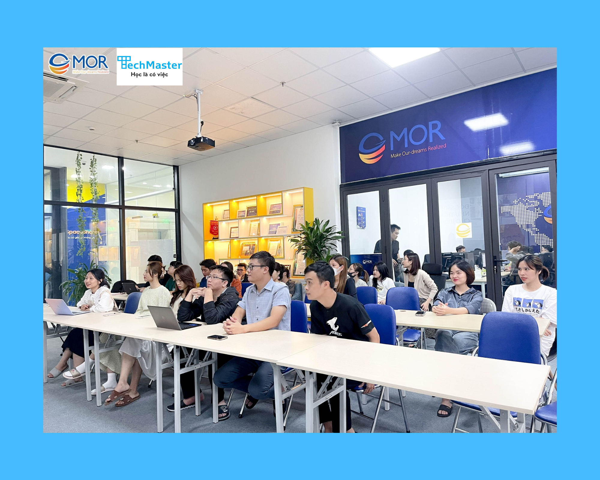

15 tháng 12, 2022 - 462 lượt xem
Là một hoạt động trong chiến dịch kết nối sinh viên và Doanh nghiệp, WORKSHOP: CleanCode trong Java được hợp tác tổ chức bởi MOR Software và TechMaster Vietnam với mục tiêu trang bị những kiến thức thực tiễn cho sinh viên về cách thức tổ chức và triển khai mã nguồn khoa học, dễ hiểu và đem lại hiệu quả cao.
Thời gian: 14h30 - 16h30, thứ 7 ngày 17/12/2022
Địa điểm: Tầng 12A, toà nhà Viwaseen, 48 Tố Hữu, Trung Văn, Nam Từ Liêm, Hà Nội
Link đăng ký: https://forms.gle/WwApourawYanegup8
Lưu ý: Có mặt trước 15 phút để check-in, trang phục lịch sự.
Buổi workshop Clean Code trong Java tập trung bàn về những vấn đề:
Đặc biệt, trong buổi workshop sẽ có những phần Quiz, trả lời đúng những câu hỏi thực tiễn này, người tham dự sẽ nhận được những phần quà ý nghĩa như Áo phông có Logo TechMaster, bình nước,…
Ngoài ra, người tham dự có thể chuẩn bị CV cá nhân trong trường hợp muốn nắm bắt cơ hội tuyển dụng của MOR Software.
